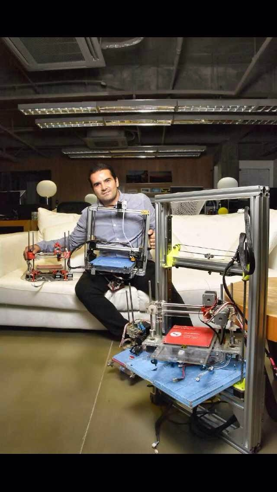

Key Discipline: Tech hardware, 3D printers, digital manufacturing, prototyping, engineer at heart, maker. Lucio, a Brazilian law graduate with an MBA in Business, is a former executive who transformed his life by selling his house and buying a sailboat. He crossed the Atlantic twice, living for a year with his family aboard, sailing around the coasts of Brazil and the Caribbean islands. Lucio loves inventing, sailing, practicing kung fu, and cooking. While living in Shanghai, he joined the Shanghai Hackerspace (XinCheJian) and built the first working, DIY 3D printer from scratch. This experience inspired him to turn his hobby and passion into a full-time activity. He designed and fabricated his own 3D printers, creating various models with different capabilities, including a portable one. He founded the first Fab Lab in China, "XinFab" (www.xinfab.com). His current goal is to build a Fab Lab on a farm located on the south coast of Portugal, providing an accessible place for anyone who wants to invent, prototype, change, and make!